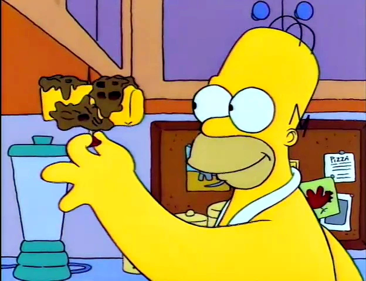

Moon Waffle from The Simpsons

Description
Homer's Moon Waffles are a food created by Homer shown in the episode Homer The Heretic. It is believed to be incredibly fattening, so much that it can fuel a rocket to the moon...
“The perfect chance to make my patented Space-Age-Out-Of-This-World Moon Waffles!" Homer said as he grabbed the ingredients of the moon waffle:
Ingredients (source)
- 1 Waffle Iron (It is to believed Homer uses new Waffle Iron for each moon waffle
- Waffle Batter
- 1 bag of Caramel Cubes
- 1 Bottle of Liquid Smoke
- 1 Stick of butter
- 1 Wooden Skewer
Steps (source)
- Plug in your waffle iron and turn it on. Then, open it and prepare the ingredients.
- Pour the whole bag of Caramel Cubes into the waffle iron.
- Overflow the waffle iron with waffle batter
- Add a healthy portion of Liquid Smoke
- Close the waffle iron
- Try eating the overflowing waffle batter that's pouring out of the Waffle iron. If it tastes terrible, then proceed.
If you taste anything that counts as tasty, start over and add more Liquid Smoke.
- Open the waffle iron once the waffle is burnt and put it on a plate.
- Put an entire stick of butter on the top of the waffle.
- Cover up the butter with the waffle as if it were a tortilla.
- Poke the wooden skewer through the waffle & butter.
- Try not to burn your mouth when you take a bite.